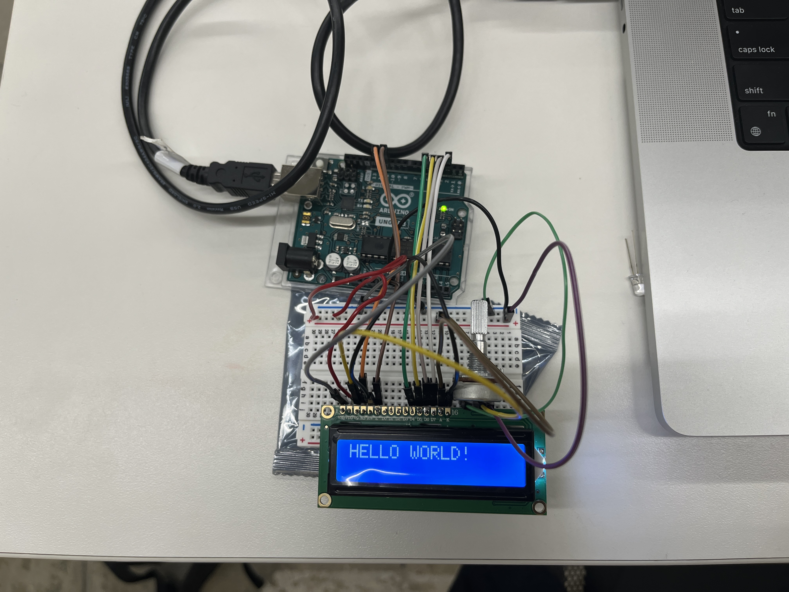
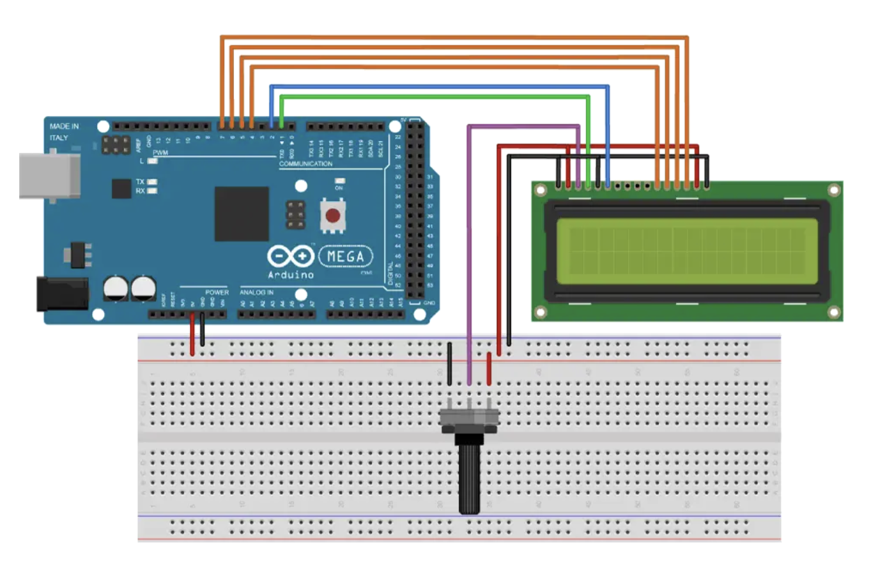

/*
LiquidCrystal Library - Hello World
Demonstrates the use a 16x2 LCD display. The LiquidCrystal
library works with all LCD displays that are compatible with the
Hitachi HD44780 driver. There are many of them out there, and you
can usually tell them by the 16-pin interface.
This sketch prints "Hello World!" to the LCD
and shows the time.
The circuit:
* LCD RS pin to digital pin 12
* LCD Enable pin to digital pin 11
* LCD D4 pin to digital pin 5
* LCD D5 pin to digital pin 4
* LCD D6 pin to digital pin 3
* LCD D7 pin to digital pin 2
* LCD R/W pin to ground
* LCD VSS pin to ground
* LCD VCC pin to 5V
* 10K resistor:
* ends to +5V and ground
* wiper to LCD VO pin (pin 3)
Library originally added 18 Apr 2008
by David A. Mellis
library modified 5 Jul 2009
by Limor Fried (http://www.ladyada.net)
example added 9 Jul 2009
by Tom Igoe
modified 22 Nov 2010
by Tom Igoe
modified 7 Nov 2016
by Arturo Guadalupi
This example code is in the public domain.
https://docs.arduino.cc/learn/electronics/lcd-displays
*/
// include the library code:
#include
// initialize the library by associating any needed LCD interface pin
// with the arduino pin number it is connected to
const int rs = 12, en = 11, d4 = 5, d5 = 4, d6 = 3, d7 = 2;
LiquidCrystal lcd(rs, en, d4, d5, d6, d7);
void setup() {
// set up the LCD's number of columns and rows:
lcd.begin(16, 2);
// Print a message to the LCD.
lcd.print("hello, world!");
}
void loop() {
// set the cursor to column 0, line 1
// (note: line 1 is the second row, since counting begins with 0):
lcd.setCursor(0, 1);
// print the number of seconds since reset:
lcd.print(millis() / 1000);
}
Project Background
Week 7 was output device week. I wanted to learn about air monitoring so I chose the led display and air quality monitor.
Process
Materials
- Arduino UNO
- MQ Sensor for air quality
- Breadboard
- Wires
- Soldering tools
- 10k potentiometer
- 16x2 Liquid Crystal Display
Testing the LCD
I started by testing the LCD. I wired the the LCD as shown below and printed "hello world."


Testing the sensor
I then added the sensor and updated the code to read the air quality measure. The changes to the wiring were pretty simple, vcc to the positive lane, gnd to negative lane, and A0 to the A0 pin.
// Include LCD library
#include
// Initialize the library with the numbers of the interface pins
LiquidCrystal lcd(12, 11, 5, 4, 3, 2);
#define MQ2_PIN A0 // Define the pin where the MQ-2 is connected
unsigned long previousMillis = 0; // Will store the last time the LCD was updated
const long interval = 1000; // Interval at which to update the LCD (1 second)
void setup() {
// Set up the LCD's number of columns and rows:
lcd.begin(16, 2);
// Print a message to the LCD.
lcd.print("Gas Sensor");
delay(2000);
lcd.clear();
}
void loop() {
unsigned long currentMillis = millis();
if (currentMillis - previousMillis >= interval) {
previousMillis = currentMillis;
int mq2_value = analogRead(MQ2_PIN); // Read the MQ-2 value
// Set the cursor to column 0, line 0
// (note: line 0 is the first row, since counting begins with 0):
lcd.setCursor(0, 0);
// Print a message to the first line of LCD
lcd.print("Gas Value: ");
// Set the cursor to column 0, line 1
// (note: line 1 is the second row, since counting begins with 0):
lcd.setCursor(0, 1);
// Print the MQ-2 gas sensor value to the second line of LCD
lcd.print(mq2_value);
lcd.clear(); // Clear the LCD for the next reading
}
}
As you can see, when the smoke comes near the sensor, it rises about 100ppm.
I did use the oscilloscope with this set up, but I am not sure the results were correct. The lab class and other office hours were having some issues. Nevertheless, I attached the ground probe to my ground pin on the LCD and the power to the data pin for the sensor. The reading produced a wave that did not mirron the symmetrical wave in the tutorial videos, but did appear to be consistent. There also was not much movement, but this is consistent with the air quality staying the same throughout the test.